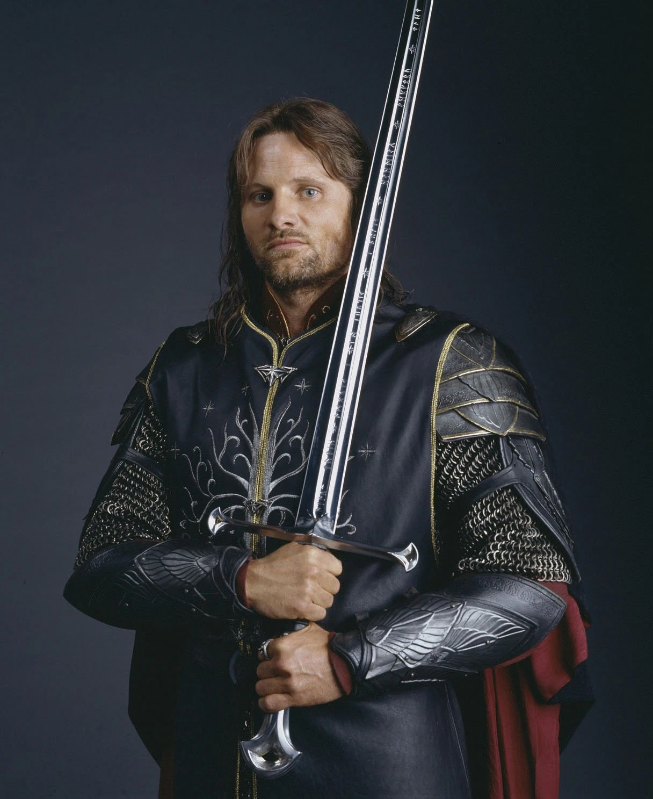
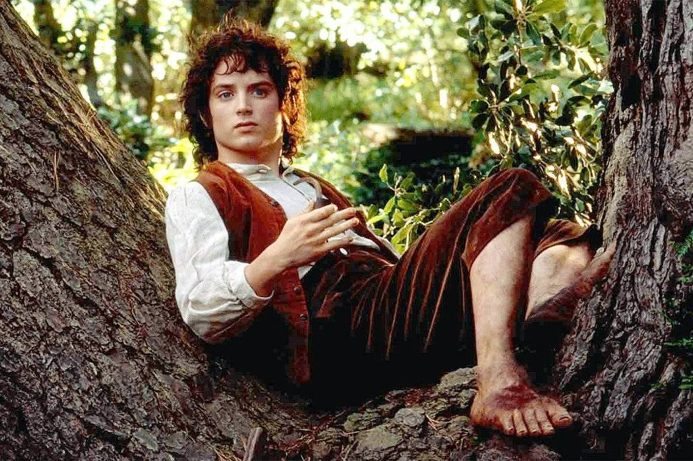
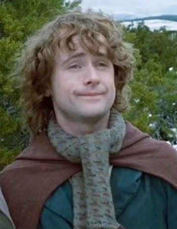
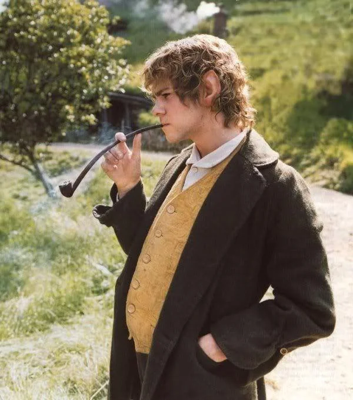
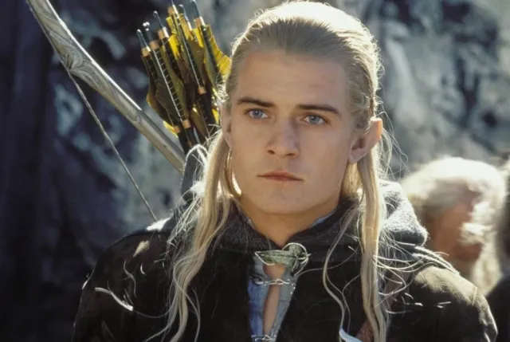
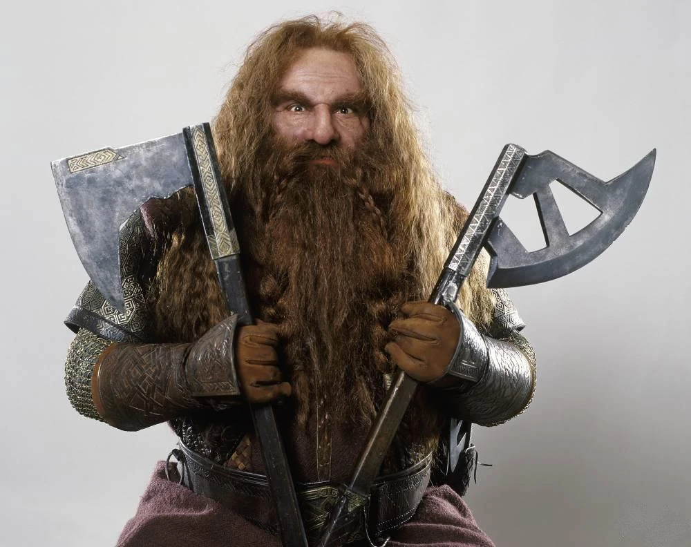
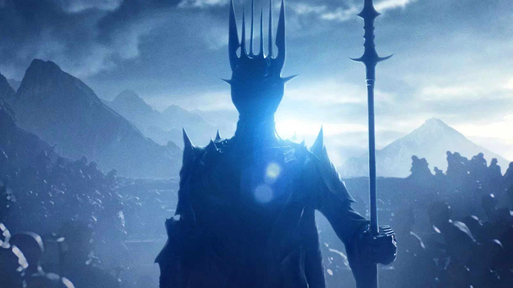
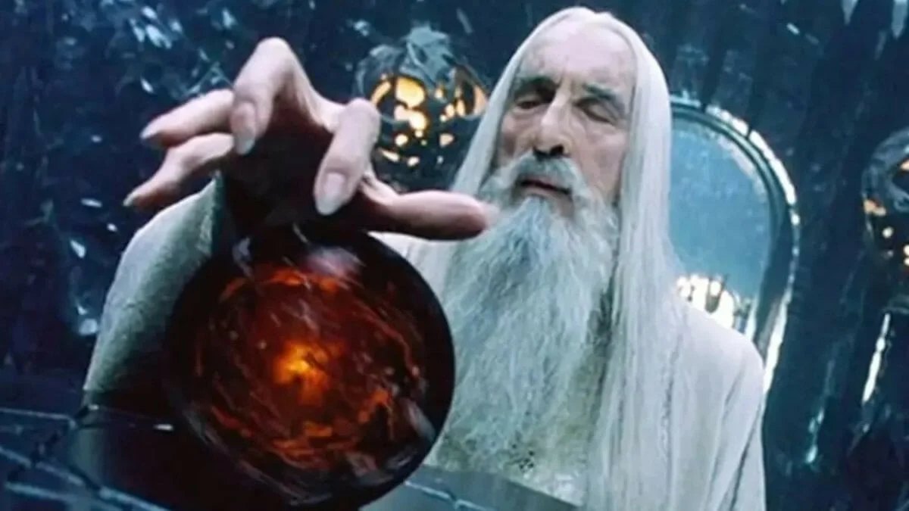

Aragorn, Filho de Arathorn, é o legítmo rei de Gondor, Ranger das terras do oeste, membro da Sociedade do Anel e um dos maiores heróis da Terra Média. Sendo crucial na batalha do abismo de Helm, Minas Tirith, e em defender o portador do Anel
A Sociedade do Anel
Frodo Bolseiro
Frodo o portador do anel, o único que pode carregar este fardo, por hobbits serem tão simples que a corrupção do anel é quase ineficaz
Samwise Gamgi
Sam, Melhor amigo e jardineiro do Frodo, Um fiel companheiro
Peregrin Tuk
Pippin, Melhor amigo de Merry, crucial na tomada de Isengard, grande fã do segundo café da manhã
Merry Brandebuque
Merry, Melhor amigo de Pippin, crucial na tomada de Isengard
Legolas
Legolas, o elfo, amigo de aragorn desde sua chegada em valfenda, crucial na batalha do abismo de Helm
Gimli
Gimli, o anão, crucial na batalha do abismo de Helm
Boromir

Boromir, primogênito do rei regente de Gondor, quase rendido ao lado sombrio, mas, obteve sua redenção.
Vilões
Sauron, Senhor Sombrio, Lorde das terras de Mordor
Sauron, antigo general de Morgoth, forjador do Um Anel
Saruman, o Branco, Senhor de Isengard e da torre branca
Saruman o Branco, o mais poderoso dos magos, porém, traidor de sua ordem, cedeu ao lado sombrio, ao lado de Sauron na Batalha pelo abismo de Helm